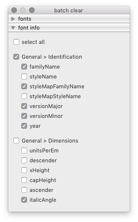
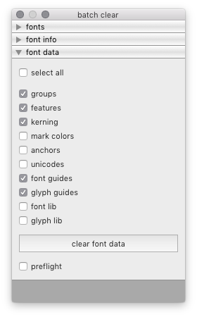

clear¶
The Clear tool is a batch tool to clear data in a set of target fonts. It can be use to clear font info attributes and other kinds of font data.
 fonts
Use the fonts panel to select which fonts to clear data from.
font info
Use the font info panel to select and clear data from font info attributes.
font data
Use the font data panel to select and clear different kinds of font-level and glyph-level data.
-
class
BatchClearDialog[source]¶ Bases:
hTools3.dialogs.batch.base.BatchDialogBaseA dialog to delete font-level and glyph-level data in the selected fonts.
from hTools3.dialogs.batch.actions import BatchClearDialog BatchClearDialog()
-
title= 'batch clear'¶
-
key= 'com.hipertipo.hTools3.dialogs.batch.clear'¶
-
fontInfo= {'OpenType': {'vhea Table': ['openTypeVheaVertTypoAscender', 'openTypeVheaVertTypoDescender', 'openTypeVheaVertTypoLineGap', 'openTypeVheaCaretSlopeRise', 'openTypeVheaCaretSlopeRun', 'openTypeVheaCaretOffset'], 'name Table': ['openTypeNamePreferredFamilyName', 'openTypeNamePreferredSubfamilyName', 'openTypeNameCompatibleFullName', 'openTypeNameWWSFamilyName', 'openTypeNameWWSSubfamilyName', 'openTypeNameVersion', 'openTypeNameUniqueID', 'openTypeNameDescription', 'openTypeNameSampleText', 'openTypeNameRecords'], 'hhea Table': ['openTypeHheaAscender', 'openTypeHheaDescender', 'openTypeHheaLineGap', 'openTypeHheaCaretSlopeRise', 'openTypeHheaCaretSlopeRun', 'openTypeHheaCaretOffset'], 'OS/2 Table': ['openTypeOS2WidthClass', 'openTypeOS2WeightClass', 'openTypeOS2Selection', 'openTypeOS2VendorID', 'openTypeOS2Type', 'openTypeOS2UnicodeRanges', 'openTypeOS2CodePageRanges', 'openTypeOS2TypoAscender', 'openTypeOS2TypoDescender', 'openTypeOS2TypoLineGap', 'openTypeOS2WinAscent', 'openTypeOS2WinDescent', 'openTypeOS2SubscriptXSize', 'openTypeOS2SubscriptYSize', 'openTypeOS2SubscriptXOffset', 'openTypeOS2SubscriptYOffset', 'openTypeOS2SuperscriptXSize', 'openTypeOS2SuperscriptYSize', 'openTypeOS2SuperscriptXOffset', 'openTypeOS2SuperscriptYOffset', 'openTypeOS2StrikeoutPosition', 'openTypeOS2StrikeoutSize'], 'Panose': ['openTypeOS2FamilyClass', 'openTypeOS2Panose'], 'head Table': ['openTypeHeadCreated', 'openTypeHeadFlags', 'openTypeHeadLowestRecPPEM'], 'gasp Table': ['openTypeGaspRangeRecords']}, 'PostScript': {'Hinting': ['postscriptBlueValues', 'postscriptOtherBlues', 'postscriptFamilyBlues', 'postscriptFamilyOtherBlues', 'postscriptStemSnapH', 'postscriptStemSnapV', 'postscriptBlueFuzz', 'postscriptBlueShift', 'postscriptBlueScale', 'postscriptForceBold'], 'Identification': ['postscriptFontName', 'postscriptFullName', 'postscriptWeightName', 'postscriptUniqueID'], 'Dimensions': ['postscriptSlantAngle', 'postscriptUnderlineThickness', 'postscriptUnderlinePosition', 'postscriptIsFixedPitch', 'postscriptDefaultWidthX', 'postscriptNominalWidthX'], 'Characters': ['postscriptDefaultCharacter', 'postscriptWindowsCharacterSet']}, 'General': {'Note': ['note'], 'Identification': ['familyName', 'styleName', 'styleMapFamilyName', 'styleMapStyleName', 'versionMajor', 'versionMinor', 'year'], 'Dimensions': ['unitsPerEm', 'descender', 'xHeight', 'capHeight', 'ascender', 'italicAngle'], 'Legal': ['copyright', 'trademark', 'openTypeNameLicense', 'openTypeNameLicenseURL'], 'Parties': ['openTypeNameDesigner', 'openTypeNameDesignerURL', 'openTypeNameManufacturer', 'openTypeNameManufacturerURL']}}¶
-
attrsIgnorePrefix= {'OpenType': {'vhea Table': 'openTypeVhea', 'name Table': 'openTypeName', 'hhea Table': 'openTypeHhea', 'OS/2 Table': 'openTypeOS2', 'Panose': 'openTypeOS2', 'head Table': 'openTypeHead', 'gasp Table': 'openType'}, 'PostScript': {'Hinting': 'postscript', 'Identification': 'postscript', 'Dimensions': 'postscript', 'Characters': 'postscript'}, 'General': {'Legal': 'openTypeName', 'Parties': 'openTypeName'}}¶
-
clearFontData= ['groups', 'features', 'kerning', 'mark colors', 'anchors', 'unicodes', 'font guides', 'glyph guides', 'font lib', 'glyph lib']¶
-
selectedAttributes¶ A list of selected font info attributes.
-
selectedFontData¶ A list of selected font data types.
-